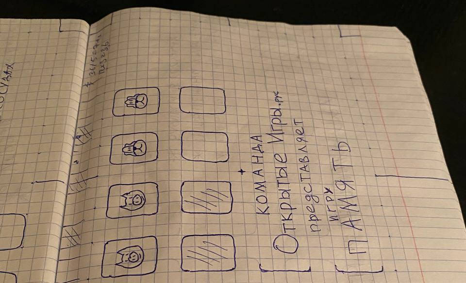

2024-07-04 00:00
In June I implemented GUI for "Memory" game in Python with the help of Python Arcade.
While searching for the most convenient tool to create resources (assets), I found notebooks lined with graph paper to work the best:

To see the portable code architecture in real life, I participated in the 3-day long gamejam of "Start the game". "Memory" game was used with a customized look to satisfy jam requirements.
Here's how the customized version looks like (Windows64 build):
I'll make the instrument support Python to JavaScript code translation.